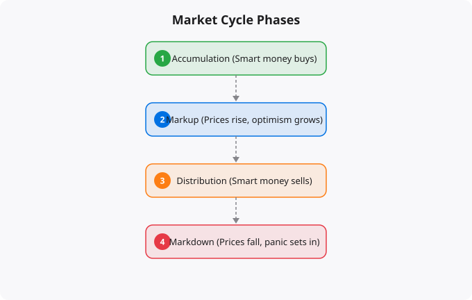

Financial markets move in cycles. Bull markets are followed by bear markets. Economic expansions are followed by contractions. Sectors that outperform for years eventually underperform. These cycles are not random noise — they follow patterns driven by real economic forces, human psychology, and the feedback loops between financial conditions and economic activity. Understanding market cycles does not allow you to time markets perfectly, but it provides a crucial context for making better investment decisions and avoiding costly behavioral mistakes.
The economy moves through a recurring sequence of phases: expansion, peak, contraction (recession), and trough, followed by the next expansion. Stock markets typically lead this cycle by six to twelve months — markets start falling before the economy peaks and start rising before the economy bottoms. This leading behavior means that markets often seem disconnected from current economic reality, which confuses investors who try to time investment decisions based on current news about the economy.
During expansion, corporate earnings grow, unemployment falls, consumer spending increases, and stock markets typically rise. During contraction, earnings decline, unemployment rises, and markets typically fall. But because markets are forward-looking, by the time the contraction is officially confirmed — often six months after it has started — a significant portion of the market decline has already happened.
Overlapping with the business cycle is the credit cycle — the expansion and contraction of credit availability in the economy. When credit is easy — low interest rates, willing lenders, loose underwriting standards — businesses and consumers borrow more, economic activity accelerates, asset prices rise, and risk-taking increases. When credit tightens — rising interest rates, cautious lenders, stricter standards — borrowing decreases, activity slows, asset prices fall, and risk aversion increases.
The 2008 financial crisis was fundamentally a credit cycle event — the collapse of an enormous expansion in mortgage credit that had inflated housing prices and financial sector leverage to unsustainable levels. Understanding that credit conditions are a primary driver of economic and market cycles is essential for making sense of central bank policy and its market impact.
Different sectors of the stock market tend to perform differently at different stages of the economic cycle. Early cycle (coming out of recession): financial services, consumer discretionary, and technology tend to lead. Mid cycle (expansion): industrials, energy, and materials tend to perform well as economic activity builds. Late cycle (peak expansion): energy and commodities often outperform as capacity constraints build and inflation rises. Recession: defensive sectors like consumer staples, healthcare, and utilities tend to hold value better as investors seek safety and reliable earnings.
Sector rotation is not a precise timing tool — the transitions are gradual and the timing varies significantly between cycles. But awareness of which sectors tend to perform in which economic environments helps explain why certain industries outperform or underperform at particular times.
Overlapping with economic cycles are sentiment cycles driven by investor psychology. Market participants move through predictable emotional states: optimism during early bull markets, excitement and greed near peaks, denial during early declines, fear during serious corrections, despair and capitulation near market bottoms, and slowly rebuilding hope as the recovery begins.
These sentiment phases create systematic patterns in market behavior. Near market tops, valuations are typically high, investor sentiment surveys show extreme optimism, IPO markets are hot, media coverage is positive and enthusiastic, and people who have never invested before are opening accounts. Near market bottoms, valuations are low, sentiment surveys show extreme pessimism, IPO markets are dead, media coverage is gloomy, and many investors have capitulated and sold their holdings.
Warren Buffett's famous advice — be fearful when others are greedy and greedy when others are fearful — is essentially advice about navigating sentiment cycles. The difficulty is that sentiment extremes are hard to identify in real time. Sentiment can stay extreme for longer than seems rational before reversing.
Beginners typically enter markets during periods of enthusiasm (because that is when investing becomes visible and exciting) and exit during periods of fear (because the losses feel unbearable). This is precisely the opposite of optimal timing. They confuse recent performance with future performance — assuming that what has gone up recently will continue going up, and that what has fallen will continue falling.
The recency bias is powerful. After a multi-year bull market, it is psychologically difficult to believe that markets can fall significantly. After a serious bear market, it is psychologically difficult to believe that things will recover. Both are errors that cost real money when acted upon.
Understanding market cycles does not mean trying to time the market — the evidence strongly suggests that most investors cannot do this successfully. Instead, use cycle awareness to maintain perspective. During bull markets: stay disciplined, do not abandon your asset allocation, be cautious about taking on excessive risk just because markets have been going up. During bear markets: recognize that downturns are temporary features of long-term markets, maintain your investment plan, and if possible, continue investing through the decline (which is buying at lower prices).
The investors who build the most wealth over time are not the ones who time cycles perfectly. They are the ones who stay rational through cycles, maintain their investment plans, and do not make catastrophic mistakes at emotional extremes.
← Back to BlogFinancial education is only valuable if it changes behavior. The concepts covered here — whether about market mechanics, investment principles, or economic systems — are most useful when they become part of your decision-making framework rather than abstract knowledge that exists separately from your actions. The most important application is self-awareness: understanding why you are tempted to make certain financial decisions, recognizing when emotion is driving a choice that analysis should drive, and building systems (automatic investments, pre-committed rules for buying and selling) that protect you from your own worst instincts under pressure. Good financial decisions compound just as good investments do.
Reading about markets is not investing. Understanding market theory is not making money. The gap between knowledge and results in investing is filled by the practice of forming independent views, testing them against reality, and updating your thinking when evidence contradicts your expectations.
Developing a genuine market view requires: choosing 2-3 indicators to follow consistently rather than tracking dozens superficially, reading primary sources (earnings reports, central bank statements, economic data releases) rather than just media commentary, maintaining an investment journal where you record your reasoning when making decisions, and reviewing that reasoning 6-12 months later to understand where your thinking was right or wrong.
Weekly routine (30 minutes):
Monday: Review portfolio performance vs benchmark
Tuesday: Read one company annual report (if stock investor)
Wednesday: Check economic calendar for key data releases
Thursday: Review Fed/RBI communications from that week
Friday: Journal -- what happened this week vs expectations?
Monthly routine (2 hours):
Review asset allocation vs targets
Rebalance if any asset class drifted more than 5%
Read one investment book chapter or whitepaper
Review all open positions and thesis validity
Quarterly routine (4 hours):
Portfolio review: what worked, what did not, why?
Tax optimization check
Update financial goals
Read one earnings season summary for key companiesMarkets in liquid, public securities are highly efficient at incorporating publicly available information. Reading the same Bloomberg article, watching the same CNBC segment, and following the same analysts as millions of other investors does not give you an informational edge. By the time you read it, the market has likely already priced it in.
Where individual investors can have a genuine edge: patience (most institutional investors face quarterly performance pressure that prevents holding through temporary weakness), sector expertise (knowing an industry deeply as a practitioner gives real insight), tax efficiency (individual investors can optimise for after-tax returns in ways institutions cannot), and behavior (simply not panic selling during drawdowns outperforms most active strategies).
Beginners think about investing as picking the stocks that will go up the most. Experienced investors think about risk management first -- ensuring that mistakes do not destroy the portfolio's ability to recover and compound. The most important risk management principles: never invest money you will need within 5 years, diversify across asset classes and geographies, avoid leverage (borrowed money amplifies both gains and losses), and size positions so that being completely wrong on any single investment does not materially damage the portfolio.
Standard financial planning guidance: build a 3-6 month emergency fund first. Then invest 10-20% of gross income, increasing toward 20%+ as income grows. For aggressive wealth building, aim for a 30-40% savings rate. Invest consistently regardless of market conditions -- time in the market beats timing the market.
Investing is deploying capital for long periods (years to decades) based on fundamental value creation. Trading is buying and selling over shorter timeframes based on price movements. Most retail investors who attempt trading underperform a simple index fund. Investing in low-cost index funds consistently outperforms most active strategies over 10+ year periods.
Start with NIFTY 50 or NIFTY 500 index funds via SIP (Systematic Investment Plan) through any major AMC or broker. Index funds provide diversification, low costs, and performance that matches the market. Add direct equity only after you have at least 6-12 months of investing experience and genuine time to research individual companies.
Yes. India is one of the fastest-growing tech markets globally. These skills are in high demand across startups, MNCs, and product companies in Bangalore, Hyderabad, Pune, and Mumbai.
Follow official documentation, tech blogs from practitioners, GitHub repositories, and communities like Dev.to, Hashnode, and Reddit. Avoid news that creates urgency without substance.
Official documentation first. Then practical tutorials. Then build real projects. SRJahir Tech articles are written from real production experience — bookmark the series that matches your learning goal.
Consistent daily practice for 3-6 months produces real, usable skills. The key is building projects, not just reading. Every article on SRJahir Tech includes practical examples you can implement today.
Yes. All articles on SRJahir Tech are completely free. No paywalls, no subscriptions. Quality technical education should be accessible to everyone, especially aspiring engineers in India.